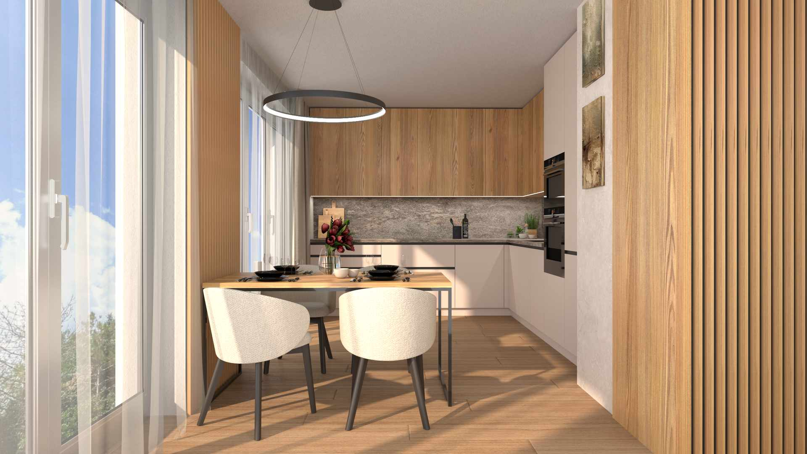

Metelka
Rezidence · Hradec Králové
Byty
Standardy
Lokalita
Praha, nebo Hradec
Kontakt
Vybrat byt

Rezidence v Hradci Králové
Metelka
Ilustrační vizualizace interiéru · standard investora
Průchozí byty 2+kk · 47,21 m²
Okna na obě strany.
Zahrádka, nebo balkon.
32 bytů ve dvou domech, devět minut od Velkého náměstí.
cena od
4 990 000 Kč
Vybrat byt
Každý byt prochází celou hloubkou domu
9 min
Velké náměstí
3–4 km
dálnice D11
80 min
Praha